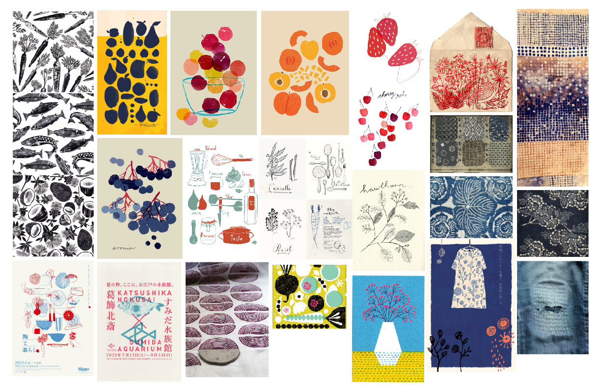
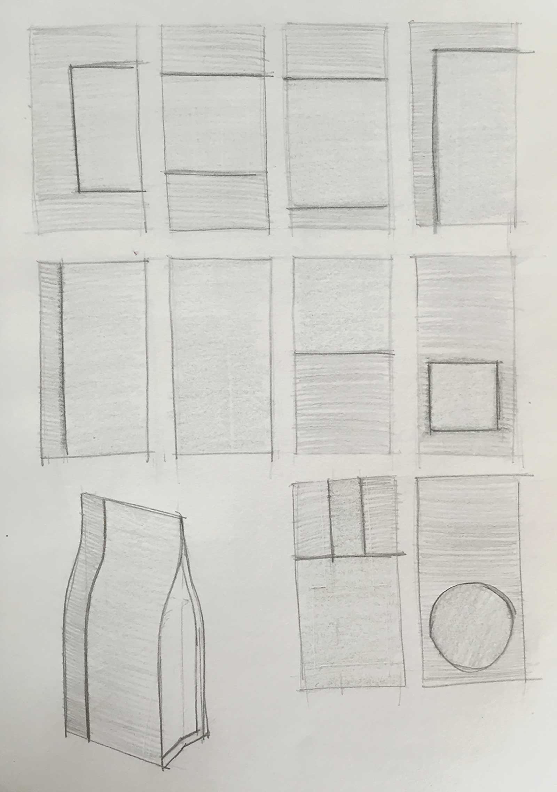
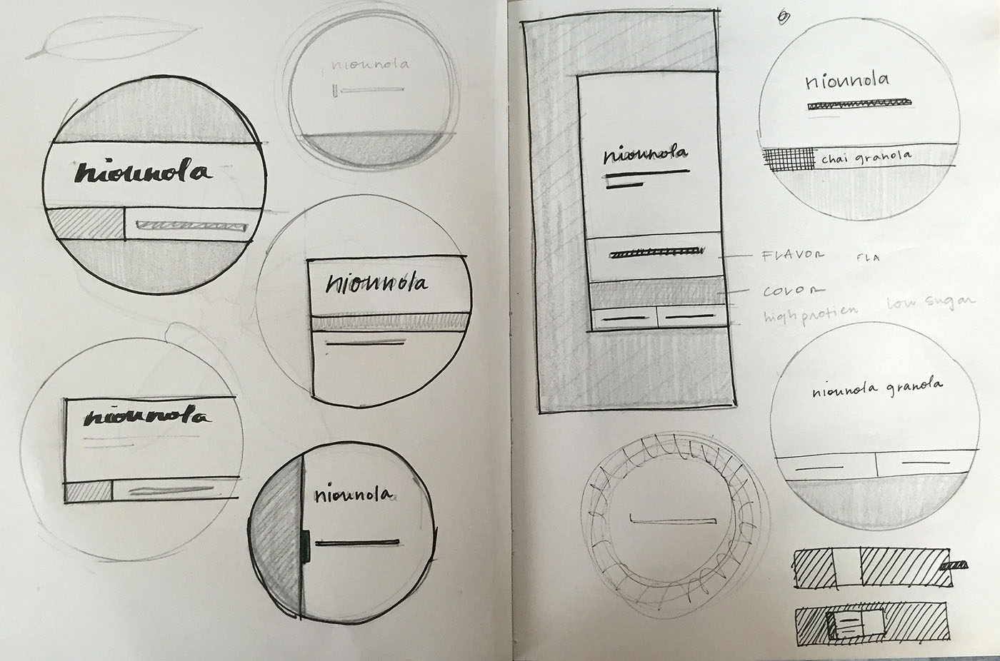
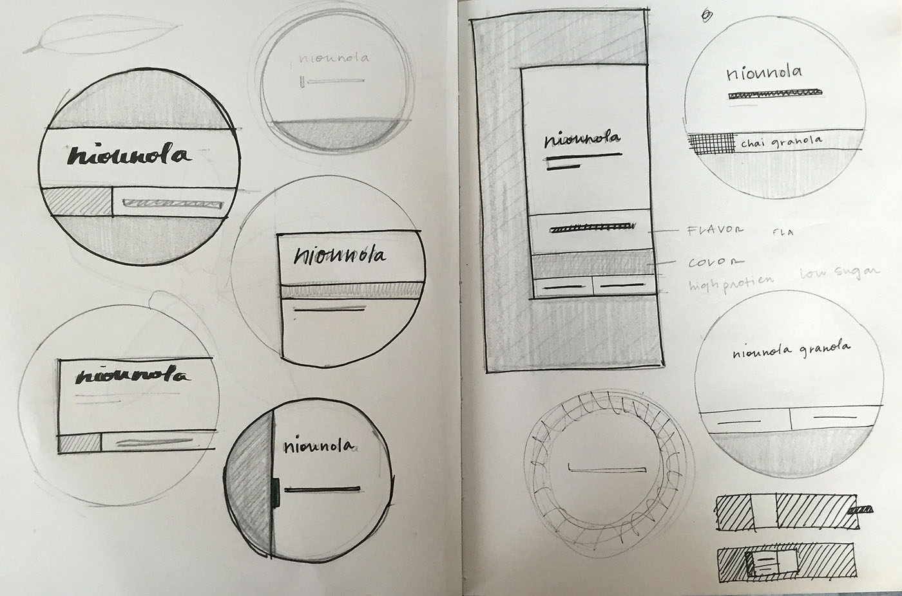

Role
Create simple brand and packaging for a (currently) DIY granola maker.
Work
Niounola is the introductory brand to an emerging cafe venture. Niounola creates their granola is small batches and incorporates asian flavors and high-protein ingredients to create really really good granola.
Brand Experience
Wholesome, fresh, and nourished
Drawing inspiration from both nature and japanese textiles and tea to help steer the visual direction.
Mark
Multiple directions were explored, from script to more polished typefaces to determine the direction.
Pattern
To contrast with the polished logo, and align with the brand attributes, simple illustrations were designed to bring attention to and differentiate between the flavors. Currently, the flavors include Matcha, Chai, Black Sesame, and Red Bean.


Process
Sticker
 

Packages